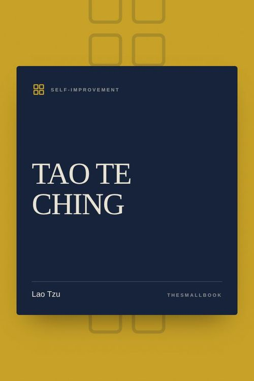

Books by Lao Tzu
Lao Tzu has one book in the library. Every book here is read down to the big idea, the lessons, the lines worth keeping and the actions worth taking. Start with the summary, then buy the full book if it earns a place on your shelf.

Tao Te Ching
-400 · 7 min · 8 lessons
The Tao that can be named is not the Tao - yet its way is practical: softness, emptiness and effortless action.
The Tao Te Ching is 81 short poems on the 'Tao' - the way things work. Its paradoxes are its method: the valley is more useful than the peak; the soft conquers the hard; the leader who leads like water, without forcing, wins everything. Wu wei - action without forcing - is not passivity but perfect timing, like a surfer with the wave. The book's quiet radicalism: most struggle is over-effort; most victory is alignment.
Lessons in the summary
- The Water Way
- Wu Wei: Action Without Forcing
- Soft Beats Hard
- The Empty Vessel
- The Leader Who Isn't Noticed
- The Uncarved Block: Simplicity as Strength
- Knowing When to Stop
- The Sage Ruler: Leading Without Controlling
Lines worth keeping
- The Tao that can be told is not the eternal Tao.
- The softest thing in the world overcomes the hardest.
- A leader is best when people barely know he exists; when his work is done, his aim fulfilled, they say: we did it ourselves.
Questions Lao Tzu helps answer
Read nearby authors next
- Amish Tripathi 6 books
- Robin Sharma 5 books
- A.P.J. Abdul Kalam 4 books
- Adam Grant 4 books
- Cal Newport 4 books
- Chetan Bhagat 4 books
- Jonathan Haidt 3 books
- Ryan Holiday 3 books
Questions Lao Tzu helps answer
Where should I start with Lao Tzu? Start with Tao Te Ching: The Tao that can be named is not the Tao - yet its way is practical: softness, emptiness and effortless action.